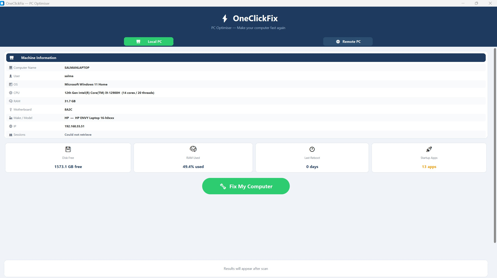
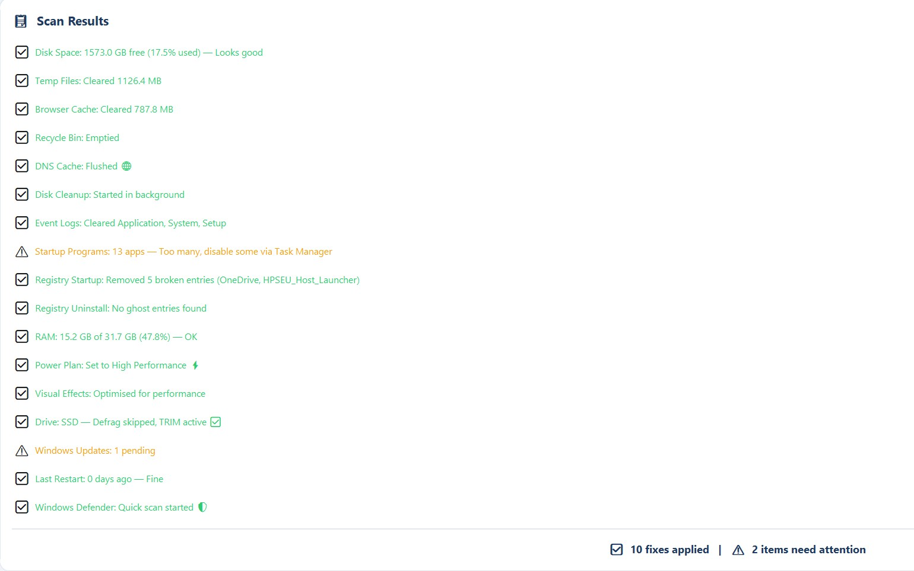
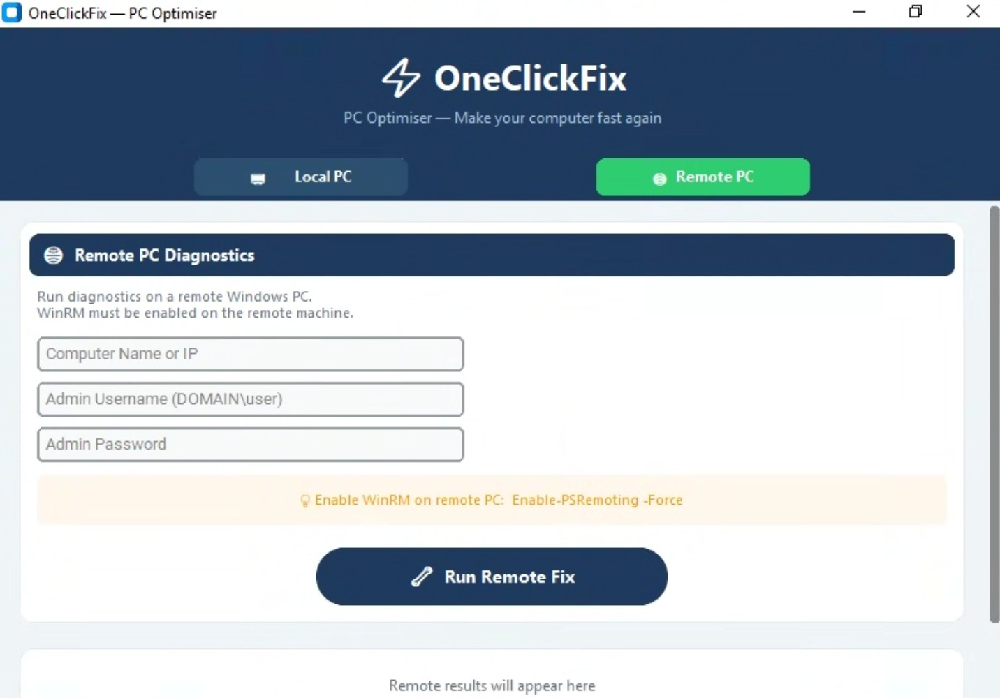

Free IT utilities & tools
Powerful IT Tools for Everyday Problems
Discover practical tools to troubleshoot, analyse, secure and optimise your digital environment.
- Free to use
- No sign-up required
- Windows apps & online tools
- Built by an IT professional
Featured Tools
Flagship apps and utilities, handpicked.
Browse by Category
Find tools by what you need to do.
All Tools
Windows Applications
Download and run — single .exe files, no installer. Windows 10/11.

🔍 Click to enlarge
Main Screen — PC snapshot at a glance

🔍 Click to enlarge
Scan Results — Full fix report with health score

🔍 Click to enlarge
Remote PC Fix — Run fixes on any networked machine
OneClickFix can connect to any Windows machine on your network and run all 17 fixes remotely.
1
Enable WinRM on the remote PC
Enable-PSRemoting -ForceRun once in PowerShell as Administrator on the remote machine2
Allow WinRM through the firewall
netsh advfirewall firewall add rule name="WinRM" dir=in action=allow protocol=TCP localport=5985Only needed if Windows Firewall is blocking port 59853
Enter credentials in OneClickFix
Computer Name or IP | DOMAIN\username | PasswordUse domain admin credentials4
Click Run Remote FixOneClickFix runs all fixes silently and returns full results in 2-3 minutes
01
Download
Click download. A single .exe file saved to your PC. No installer, no bloatware.
02
Run as Admin
Right-click and choose "Run as administrator" so it has the permissions it needs.
03
Click Fix
Hit the big green button. All 17 checks run automatically in one go.
04
Review Results
See what was fixed, your PC Health Score out of 10, and recommendations.